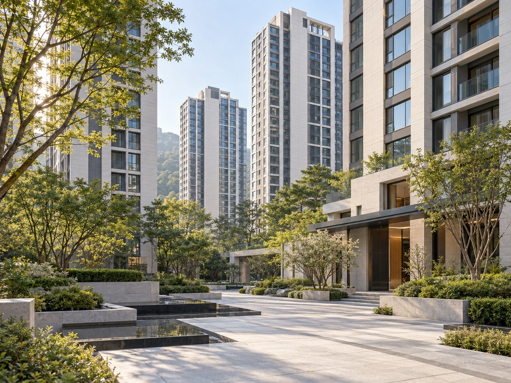
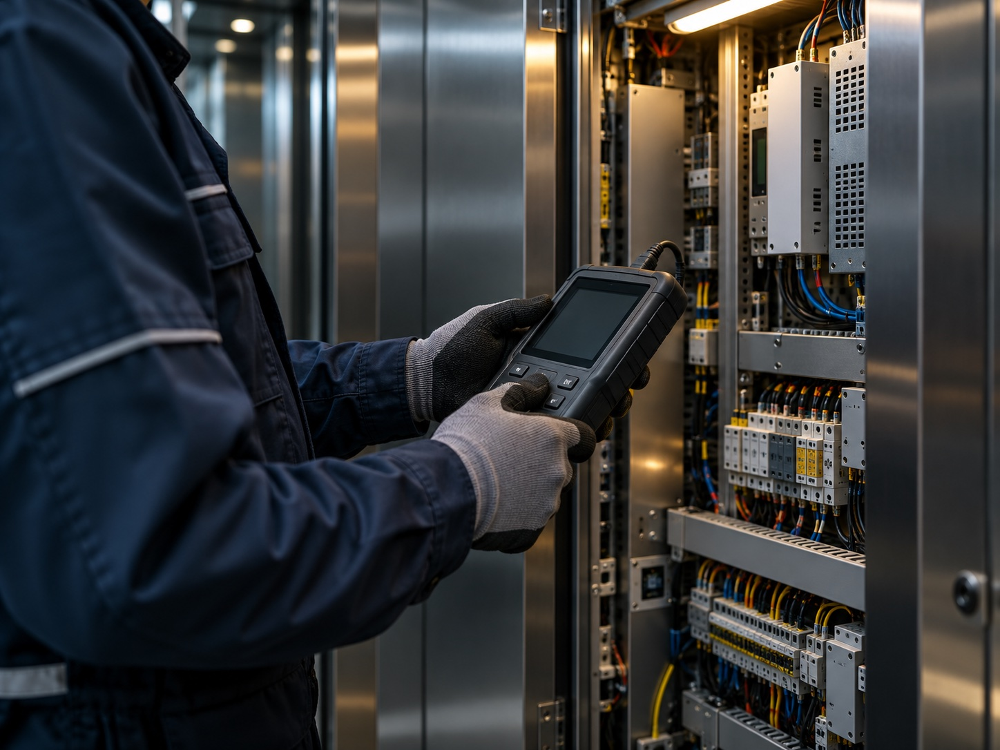
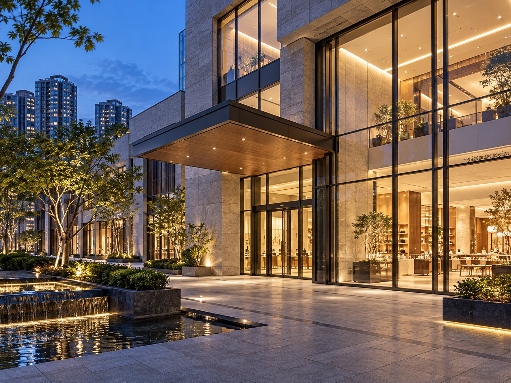

공동주택
아파트·오피스텔 등 주거시설.
이용 빈도와 설비 상태를 확인합니다.
 구일엘리베이터
구일엘리베이터✳서울·경기 전역 승강기 유지관리·공사
24시간 고장 대응과 자체 개발 관리 시스템.
접수부터 기사 배정, 조치 내역까지 직접 관리합니다.
정기점검부터 고장 대응, 교체공사까지.
직영 관리와 자체 개발한 고장관리 시스템으로 현장을 관리합니다.
서울·경기 전역 유지관리
야간·휴일에도 현장 출동
고장 접수와 현장 조치 내역을 함께 확인
설비를 전부 바꿀지, 필요한 부분만 바꿀지.
현장과 검사 이력을 확인한 뒤 안내합니다.

고장 접수부터
처리 기록까지.
고장 접수·기사 배정·출동·조치 결과를
직접 개발한 고장관리 시스템에 기록합니다.
휴일을 포함해 고장을 접수하고 현장 대응을 진행합니다.
접수 내용, 담당 기사, 조치 결과를 자체 시스템에 기록합니다.
점검 내역과 교체 기록을 확인하고 필요한 작업을 안내합니다.
운행 시간, 이용 인원, 설비 상태를 확인하고
건물별 관리 계획을 세웁니다.

아파트·오피스텔 등 주거시설.
이용 빈도와 설비 상태를 확인합니다.

사무실·업무용 건물.
운영 시간에 맞춰 점검 일정을 협의합니다.

매장·상업용 건물.
이용 환경에 맞는 점검 항목을 확인합니다.
위 항목은 상담 가능한 건물 유형 안내이며, 실제 시공실적을 나타내지 않습니다.
건물 주소, 승강기 대수와 제조사, 현재 관리 상황을 알려주시면 상담에 도움이 됩니다. 확인이 어려운 항목은 상담 시 함께 살펴봅니다.
가능합니다. 승강기 상태와 필요한 작업을 확인한 뒤 공사 범위와 일정을 협의합니다. 아래 전화 또는 이메일로 문의해 주세요.
건물 구조와 설치 조건, 승강기 사양에 따라 달라집니다. 현장 정보와 요청사항을 확인한 뒤 안내드립니다.
문의 내용을 남겨주시면 구일엘리베이터에서 확인하겠습니다.